Bayesian Statistics in R
We’ll learn how to compute posterior distributions, step-by-step:
- 🎯 Acceptance/Rejection Sampling (AR Sampling)
- 🔁 Markov Chain Monte Carlo (MCMC) — more efficient than AR!
And introduce powerful R packages for Bayesian modeling:
- 🧪
rjags— Gibbs sampling with BUGS syntax - 🔬
rstan— write your own Stan models - 📦
brms— beginner-friendly interface to Stan
0.1 📦 Packages we’ll use today
0.2 🎲 Computing Posterior Distributions
0.2.1 1️⃣ Acceptance/Rejection Sampling - Basics
Here’s how AR sampling works:
- Propose values for parameters
- Simulate data based on those values
- Measure how well it fits the observed data
- Accept if close enough (✔️), reject otherwise (❌)
0.2.1.1 🌽 Simulating Corn Yield vs. Plant Density
We simulate yield using a parabolic function.
Then compare simulated data to the real observed values. If the fit is good enough, we keep those parameter values.
👀 We’ll visualize which parameter sets are accepted and which aren’t.
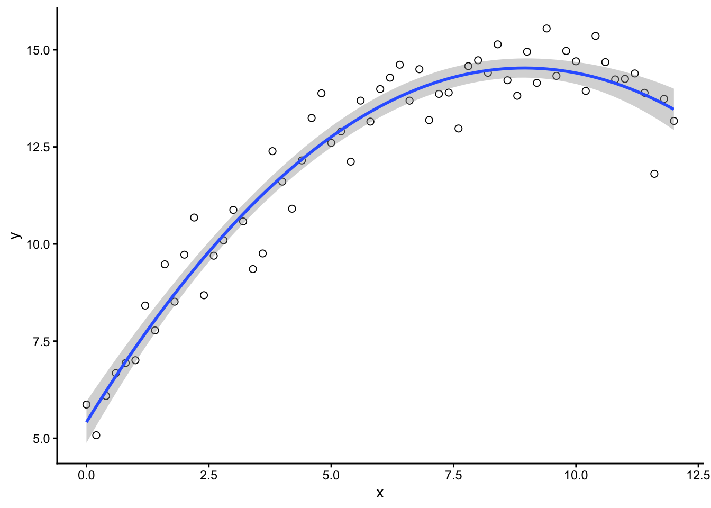
Algorithm settings:
- Generate proposal parameter values using the prior distributions.
- Generate data with those parameters.
- Compare the simulated data with the observed data = difference.
- Accept that combination of parameters if the difference is smaller than the predefined acceptable error. Reject it otherwise.
Show code

Show code
set.seed(567567)
k = 1
b0_try <- runif(1, 4, 6)
b1_try <- runif(1, 1, 3)
b2_try <- rgamma(1, 0.1, 2)
mu_try <- b0_try + x*b1_try - (x^2)*b2_try
sigma_try <- rgamma(1, 2, 2)
y_try <- rnorm(n, mu_try, sigma_try)
diff[k, ] <- sum(abs(y - y_try))
y_hat[k, ] <- y_try
posterior_samp_parameters[k, ] <- c(b0_try, b1_try, b2_try, sigma_try)
plot(x, y, xlab = "Plant density",
ylab = "Observed yield", xlim = c(2, 13), ylim = c(5, 20),
typ = "b", cex = 0.8, pch = 20, col = rgb(0.7, 0.7, 0.7, 0.9))
points(x, y_hat[k,], typ = "b", lwd = 2,
col = ifelse(diff[1] < error, "gold", "tomato"))
Show code
set.seed(76543)
k = 1
b0_try <- runif(1, 4, 6)
b1_try <- runif(1, 1, 3)
b2_try <- rgamma(1, .5, 2)
mu_try <- b0_try + x*b1_try - (x^2)*b2_try
sigma_try <- rgamma(1, 2, 2)
y_try <- rnorm(n, mu_try, sigma_try)
diff[k, ] <- sum(abs(y - y_try))
y_hat[k, ] <- y_try
posterior_samp_parameters[k, ] <- c(b0_try, b1_try, b2_try, sigma_try)
plot(x, y, xlab = "Plant density",
ylab = "Observed yield", xlim = c(2, 13), ylim = c(5, 20),
typ = "b", cex = 0.8, pch = 20, col = rgb(0.7, 0.7, 0.7, 0.9))
points(x, y_hat[k,], typ = "b", lwd = 2,
col = ifelse(diff[1] < error, "gold", "tomato"))
Now, what if we change the priors:
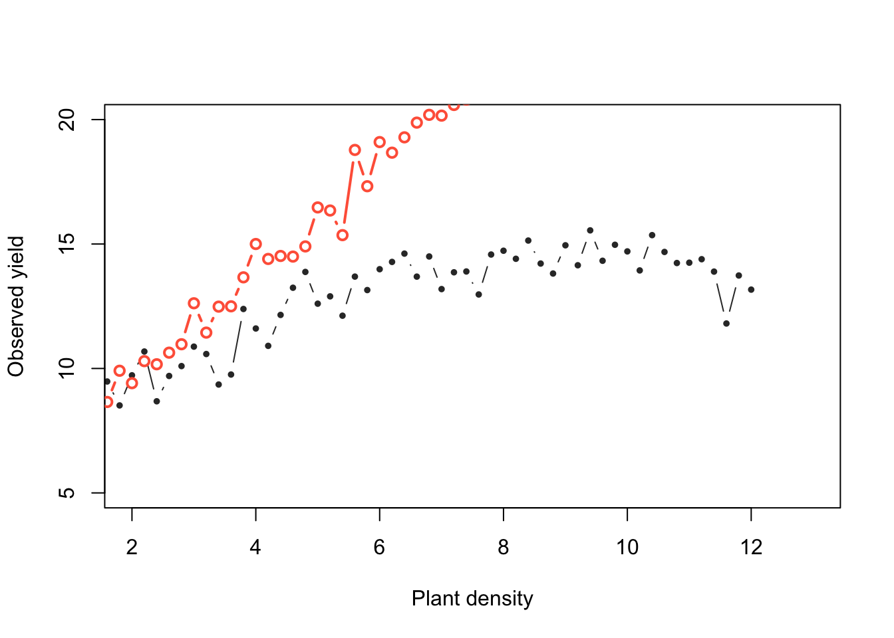
Now, do many tries.
Show code
for (k in 1:K_tries) {
b0_try <- runif(1, 2, 10)
b1_try <- rnorm(1, 2.2, .5)
b2_try <- rgamma(1, .25, 2)
mu_try <- b0_try + x*b1_try - (x^2)*b2_try
sigma_try <- rgamma(1, 2, 2)
y_try <- rnorm(n, mu_try, sigma_try)
diff[k, ] <- sum(abs(y - y_try))
y_hat[k, ] <- y_try
posterior_samp_parameters[k, ] <- c(b0_try, b1_try, b2_try, sigma_try)
}Acceptance rate
Priors versus posteriors:
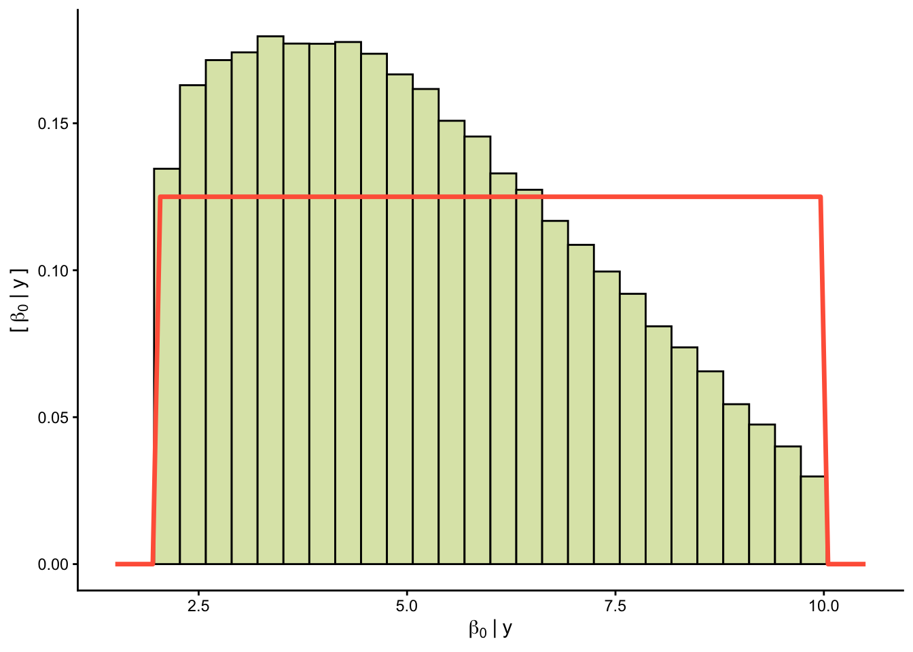
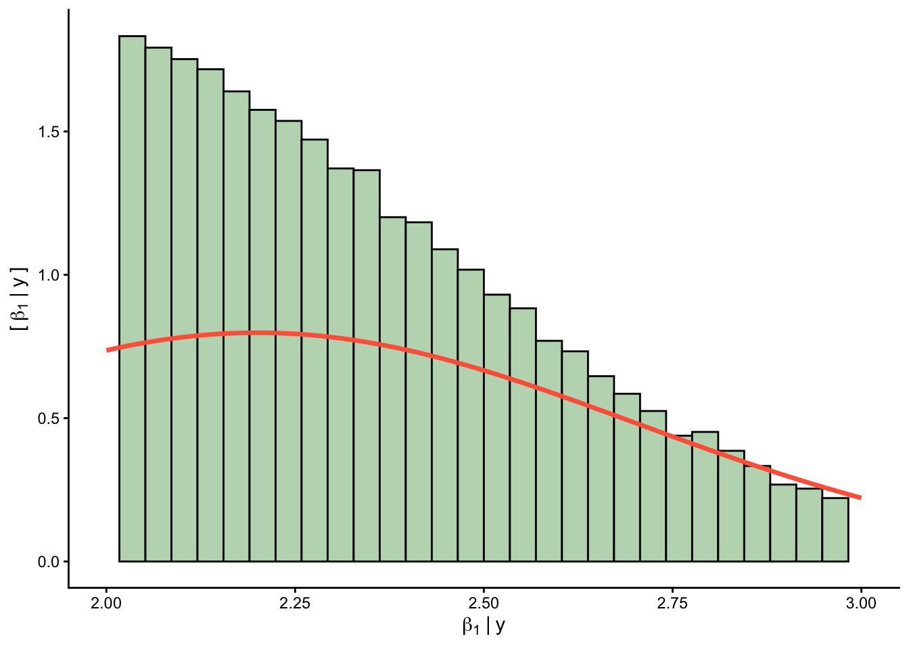
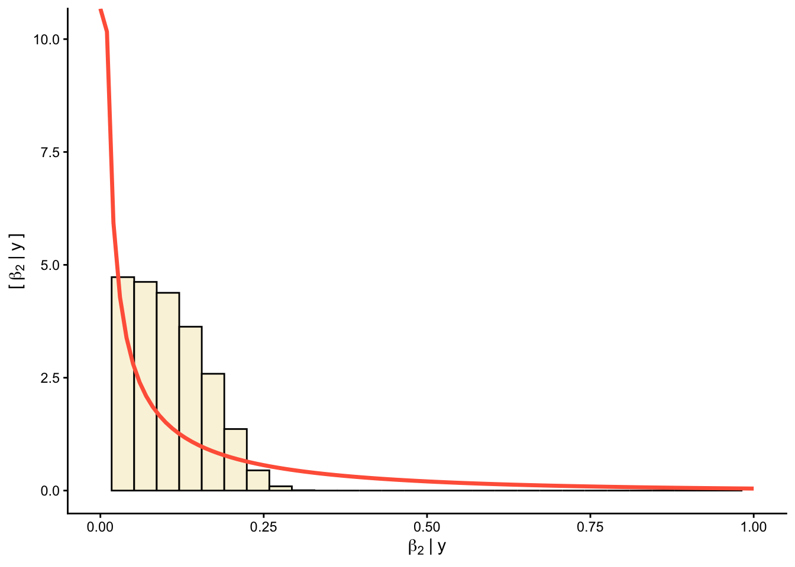
0.2.1.2 📊 Plot predictions
Show code
filtered_yhat <- y_hat[which(diff < error), 50]
df_yhat <- data.frame(pred = filtered_yhat)
ggplot(df_yhat, aes(x = pred)) +
geom_histogram(aes(y = ..density..), fill = "grey", color = "black", bins = 30) +
geom_vline(xintercept = y[50], color = "gold", linetype = "dashed", linewidth = 1.2) +
labs(
x = expression(hat(y)[50]),
y = "Density"
) +
theme_classic()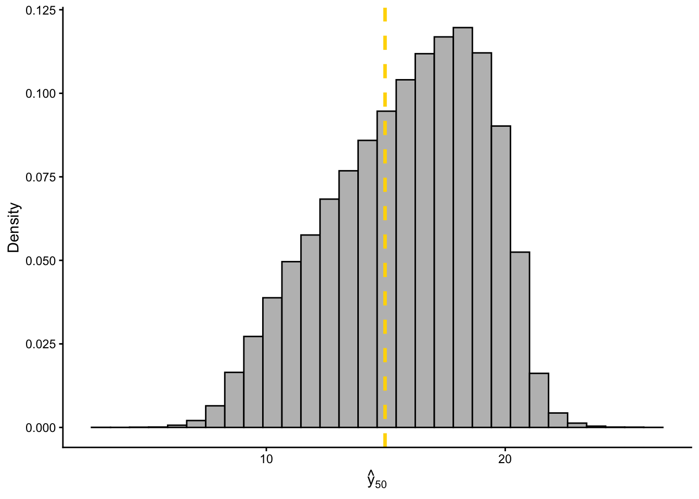
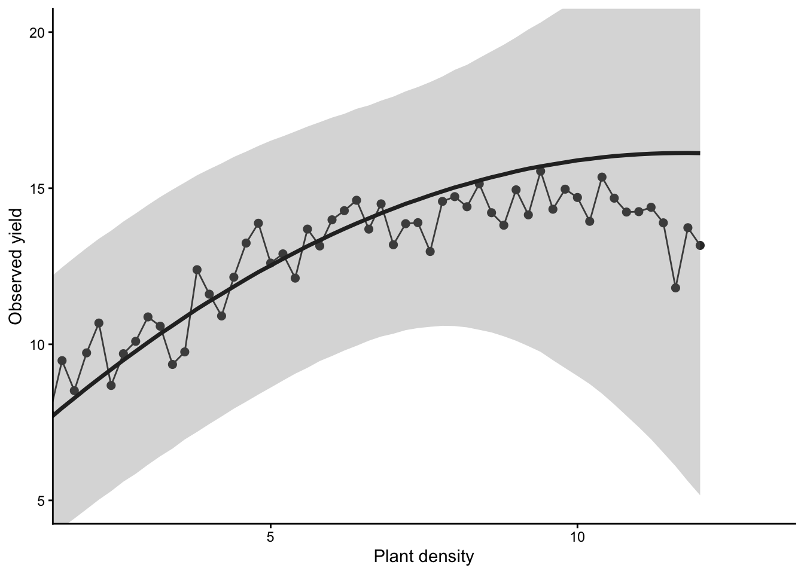
Let’s get started
0.3 🔁 Markov Chain Monte Carlo (MCMC)
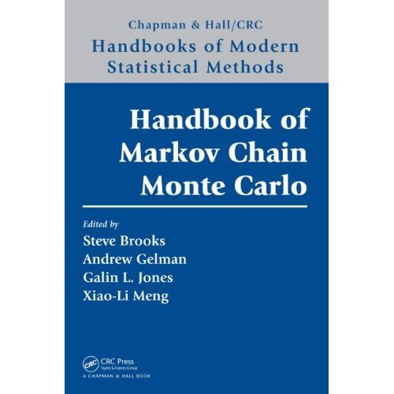
MCMC methods changed Bayesian stats forever! 🧠🔥
- They let us generate samples from complex distributions
- They form a chain, where each sample depends on the previous
- Used in packages like
brms,rstan, andrjags
📚 More info: - MCMC Handbook - MCMCpack - mcmc - Paper: Foundations of MCMC
0.4 rjags: Just Another Gibbs Sampler
🔗 Docs: https://mcmc-jags.sourceforge.io/
🐛 Issues: https://sourceforge.net/projects/mcmc-jags/
rjags uses the classic Gibbs Sampling approach and the BUGS model syntax (used in WinBUGS, OpenBUGS).
- More manual than
brms - Ideal for users who want to write the full statistical model
- Often paired with the
codapackage for diagnostics
0.5 rstan: Full Control with Stan

🔗 Docs: https://mc-stan.org/rstan/
🐛 Issues: https://github.com/stan-dev/rstan/issues
Stan is a powerful, high-performance platform for Bayesian modeling, using: - Hamiltonian Monte Carlo (HMC) - No-U-Turn Sampler (NUTS)
Unlike brms, Stan requires writing the full model, offering full flexibility and speed.
✨ brms can even show the Stan code it generates under the hood.
Stan also supports Python, Julia, MATLAB, and more.
0.6 brms: Bayesian Regression Models using Stan
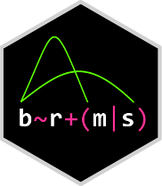
🔗 Docs: https://paul-buerkner.github.io/brms/
🐛 Issues: https://github.com/paul-buerkner/brms/issues
brms makes it easy to run complex Bayesian models without writing Stan code manually. It is inspired by lme4, so syntax feels familiar.
It supports a wide range of models: - Linear, GLM, survival, zero-inflated, ordinal, count, and more
✨ We will use brms as our main interface in this session.
📚 More info: - JSS Article on brms
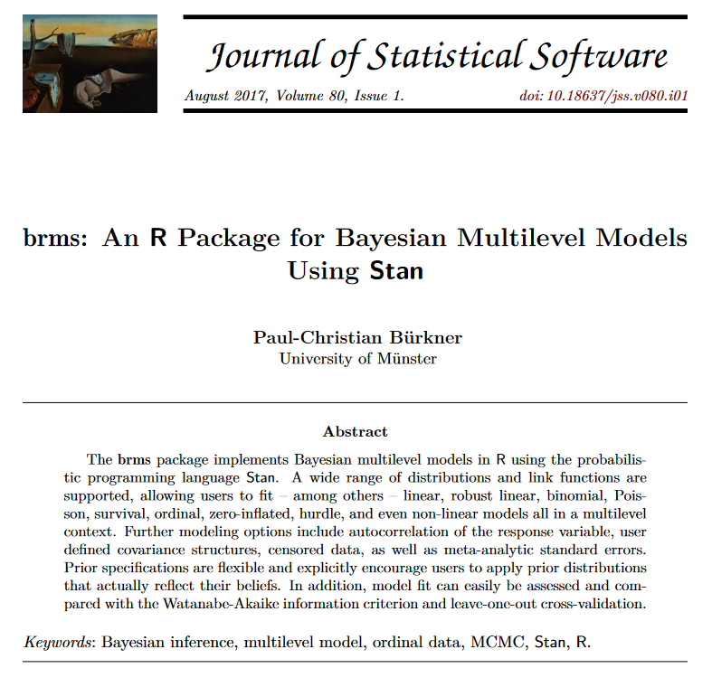
0.6.1 Fit brms
Let’s now fit a Bayesian quadratic-plateau model to estimate AONR directly from the corn nitrogen response data.
0.6.1.1 Corn Data
We will again use our synthetic dataset of corn yield response to nitrogen fertilizer across two sites and three years with contrasting weather.
Show code
# Read CSV file
cornn_data <- read.csv("data/cornn_data.csv") %>%
mutate(
n_trt = factor(n_trt, levels = c("N0", "N60", "N90", "N120",
"N180", "N240", "N300")),
block = factor(block),
site = factor(site),
year = factor(year),
site_year = interaction(site, weather, drop = FALSE), # create interaction
weather = factor(weather)
) %>%
# IMPORTANT: blocks are nested within site (Block 1 in A is not the same as Block 1 in B)
mutate(
block_in_site = interaction(site, block, drop = TRUE),
yield = yield_kgha
)
glimpse(cornn_data)Rows: 168
Columns: 10
$ site <fct> A, A, A, A, A, A, A, A, A, A, A, A, A, A, A, A, A, A, A,…
$ year <fct> 2004, 2004, 2004, 2004, 2004, 2004, 2004, 2004, 2004, 20…
$ block <fct> 1, 2, 3, 4, 1, 2, 3, 4, 1, 2, 3, 4, 1, 2, 3, 4, 1, 2, 3,…
$ n_trt <fct> N0, N0, N0, N0, N60, N60, N60, N60, N90, N90, N90, N90, …
$ nrate_kgha <int> 0, 0, 0, 0, 60, 60, 60, 60, 90, 90, 90, 90, 120, 120, 12…
$ yield_kgha <int> 6860, 7048, 8083, 8194, 10010, 9568, 10256, 10939, 11959…
$ weather <fct> normal, normal, normal, normal, normal, normal, normal, …
$ site_year <fct> A.normal, A.normal, A.normal, A.normal, A.normal, A.norm…
$ block_in_site <fct> A.1, A.2, A.3, A.4, A.1, A.2, A.3, A.4, A.1, A.2, A.3, A…
$ yield <int> 6860, 7048, 8083, 8194, 10010, 9568, 10256, 10939, 11959…0.6.2 brms pars
WU: Warmup iterations (burn-in). This is the number of initial samples that will be discarded to allow the Markov chain to converge to the target distribution.
IT: Total iterations. This is the total number of samples to draw from the posterior distribution, including warmup.
TH: Thinning interval. This is the interval at which samples are kept. For example, if TH = 5, every 5th sample will be retained, and the others will be discarded. Thinning can help reduce autocorrelation in the samples.
CH: Number of chains. This is the number of independent Markov chains to run. Running multiple chains can help assess convergence and ensure that the results are not dependent on the starting values.
AD: Adapt delta. This is a tuning parameter for the No-U-Turn Sampler (NUTS) algorithm used by Stan. It controls the target acceptance rate for the sampler. A higher adapt delta can lead to more accurate sampling but may increase computation time.
Show code
WU <- 2000
IT <- 6000
TH <- 5
CH <- 6
AD <- 0.990.6.3 Model
Show code
bayes_model <-
brms::brm(
prior = c(
# Intercept in kg/ha
prior('normal(6000, 2500)', nlpar = 'b0', lb = 0),
# Initial slope in kg grain per kg N
prior('normal(50, 25)', nlpar = 'b1', lb = 0),
# Agronomic optimum N rate in kg N/ha
prior('normal(180, 60)', nlpar = 'aonr', lb = 0)
),
formula = bf(
yield_kgha ~
(1 - step(nrate_kgha - aonr)) *
(b0 + b1 * nrate_kgha - (b1 / (2 * aonr)) * nrate_kgha^2) +
step(nrate_kgha - aonr) *
(b0 + b1 * aonr - (b1 / (2 * aonr)) * aonr^2),
b0 + b1 + aonr ~ 1,
nl = TRUE
),
data = cornn_data,
sample_prior = "yes",
family = gaussian(link = 'identity'),
control = list(adapt_delta = AD),
warmup = WU, iter = IT, thin = TH,
chains = CH, cores = CH,
init = 0,
seed = 1,
refresh = 1000
)Running /Library/Frameworks/R.framework/Resources/bin/R CMD SHLIB foo.c
using C compiler: ‘Apple clang version 17.0.0 (clang-1700.6.3.2)’
using SDK: ‘MacOSX26.2.sdk’
clang -arch arm64 -std=gnu2x -I"/Library/Frameworks/R.framework/Resources/include" -DNDEBUG -I"/Library/Frameworks/R.framework/Versions/4.5-arm64/Resources/library/Rcpp/include/" -I"/Library/Frameworks/R.framework/Versions/4.5-arm64/Resources/library/RcppEigen/include/" -I"/Library/Frameworks/R.framework/Versions/4.5-arm64/Resources/library/RcppEigen/include/unsupported" -I"/Library/Frameworks/R.framework/Versions/4.5-arm64/Resources/library/BH/include" -I"/Library/Frameworks/R.framework/Versions/4.5-arm64/Resources/library/StanHeaders/include/src/" -I"/Library/Frameworks/R.framework/Versions/4.5-arm64/Resources/library/StanHeaders/include/" -I"/Library/Frameworks/R.framework/Versions/4.5-arm64/Resources/library/RcppParallel/include/" -I"/Library/Frameworks/R.framework/Versions/4.5-arm64/Resources/library/rstan/include" -DEIGEN_NO_DEBUG -DBOOST_DISABLE_ASSERTS -DBOOST_PENDING_INTEGER_LOG2_HPP -DSTAN_THREADS -DUSE_STANC3 -DSTRICT_R_HEADERS -DBOOST_PHOENIX_NO_VARIADIC_EXPRESSION -D_HAS_AUTO_PTR_ETC=0 -include '/Library/Frameworks/R.framework/Versions/4.5-arm64/Resources/library/StanHeaders/include/stan/math/prim/fun/Eigen.hpp' -D_REENTRANT -DRCPP_PARALLEL_USE_TBB=1 -I/opt/R/arm64/include -fPIC -falign-functions=64 -Wall -g -O2 -c foo.c -o foo.o
In file included from <built-in>:1:
In file included from /Library/Frameworks/R.framework/Versions/4.5-arm64/Resources/library/StanHeaders/include/stan/math/prim/fun/Eigen.hpp:22:
In file included from /Library/Frameworks/R.framework/Versions/4.5-arm64/Resources/library/RcppEigen/include/Eigen/Dense:1:
In file included from /Library/Frameworks/R.framework/Versions/4.5-arm64/Resources/library/RcppEigen/include/Eigen/Core:19:
/Library/Frameworks/R.framework/Versions/4.5-arm64/Resources/library/RcppEigen/include/Eigen/src/Core/util/Macros.h:679:10: fatal error: 'cmath' file not found
679 | #include <cmath>
| ^~~~~~~
1 error generated.
make: *** [foo.o] Error 1Show code
plot(bayes_model)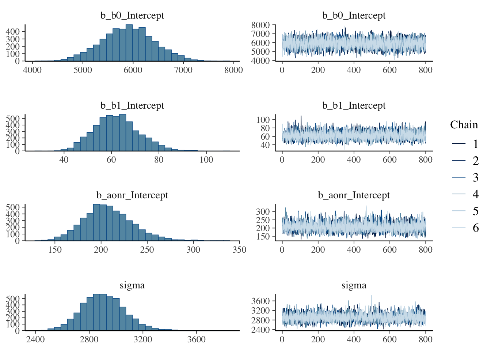
Show code
bayes_model Family: gaussian
Links: mu = identity
Formula: yield_kgha ~ (1 - step(nrate_kgha - aonr)) * (b0 + b1 * nrate_kgha - (b1/(2 * aonr)) * nrate_kgha^2) + step(nrate_kgha - aonr) * (b0 + b1 * aonr - (b1/(2 * aonr)) * aonr^2)
b0 ~ 1
b1 ~ 1
aonr ~ 1
Data: cornn_data (Number of observations: 168)
Draws: 6 chains, each with iter = 6000; warmup = 2000; thin = 5;
total post-warmup draws = 4800
Regression Coefficients:
Estimate Est.Error l-95% CI u-95% CI Rhat Bulk_ESS Tail_ESS
b0_Intercept 5898.13 519.67 4872.19 6920.33 1.00 4587 4694
b1_Intercept 62.20 9.43 45.25 81.89 1.00 4483 4600
aonr_Intercept 207.75 26.45 160.09 264.72 1.00 4589 4658
Further Distributional Parameters:
Estimate Est.Error l-95% CI u-95% CI Rhat Bulk_ESS Tail_ESS
sigma 2906.48 160.86 2613.53 3242.83 1.00 4607 4463
Draws were sampled using sampling(NUTS). For each parameter, Bulk_ESS
and Tail_ESS are effective sample size measures, and Rhat is the potential
scale reduction factor on split chains (at convergence, Rhat = 1).
3%] (Warmup)
Chain 4: Iteration: 2001 / 6000 [ 33%] (Sampling)
Chain 6: Iteration: 2000 / 6000 [ 33%] (Warmup)
Chain 6: Iteration: 2001 / 6000 [ 33%] (Sampling)
Chain 1: Iteration: 3000 / 6000 [ 50%] (Sampling)
Chain 2: Iteration: 3000 / 6000 [ 50%] (Sampling)
Chain 5: Iteration: 3000 / 6000 [ 50%] (Sampling)
Chain 4: Iteration: 3000 / 6000 [ 50%] (Sampling)
Chain 3: Iteration: 3000 / 6000 [ 50%] (Sampling)
Chain 6: Iteration: 3000 / 6000 [ 50%] (Sampling)
Chain 1: Iteration: 4000 / 6000 [ 66%] (Sampling)
Chain 2: Iteration: 4000 / 6000 [ 66%] (Sampling)
Chain 5: Iteration: 4000 / 6000 [ 66%] (Sampling)
Chain 4: Iteration: 4000 / 6000 [ 66%] (Sampling)
Chain 1: Iteration: 5000 / 6000 [ 83%] (Sampling)
Chain 6: Iteration: 4000 / 6000 [ 66%] (Sampling)
Chain 2: Iteration: 5000 / 6000 [ 83%] (Sampling)
Chain 3: Iteration: 4000 / 6000 [ 66%] (Sampling)
Chain 5: Iteration: 5000 / 6000 [ 83%] (Sampling)
Chain 1: Iteration: 6000 / 6000 [100%] (Sampling)
Chain 1:
Chain 1: Elapsed Time: 2.301 seconds (Warm-up)
Chain 1: 3.513 seconds (Sampling)
Chain 1: 5.814 seconds (Total)
Chain 1:
Chain 4: Iteration: 5000 / 6000 [ 83%] (Sampling)
Chain 6: Iteration: 5000 / 6000 [ 83%] (Sampling)
Chain 2: Iteration: 6000 / 6000 [100%] (Sampling)
Chain 2:
Chain 2: Elapsed Time: 2.173 seconds (Warm-up)
Chain 2: 4.064 seconds (Sampling)
Chain 2: 6.237 seconds (Total)
Chain 2:
Chain 5: Iteration: 6000 / 6000 [100%] (Sampling)
Chain 5:
Chain 5: Elapsed Time: 2.226 seconds (Warm-up)
Chain 5: 4.401 seconds (Sampling)
Chain 5: 6.627 seconds (Total)
Chain 5:
Chain 3: Iteration: 5000 / 6000 [ 83%] (Sampling)
Chain 6: Iteration: 6000 / 6000 [100%] (Sampling)
Chain 6:
Chain 6: Elapsed Time: 3.011 seconds (Warm-up)
Chain 6: 3.874 seconds (Sampling)
Chain 6: 6.885 seconds (Total)
Chain 6:
Chain 4: Iteration: 6000 / 6000 [100%] (Sampling)
Chain 4:
Chain 4: Elapsed Time: 2.659 seconds (Warm-up)
Chain 4: 4.277 seconds (Sampling)
Chain 4: 6.936 seconds (Total)
Chain 4:
Chain 3: Iteration: 6000 / 6000 [100%] (Sampling)
Chain 3:
Chain 3: Elapsed Time: 2.641 seconds (Warm-up)
Chain 3: 5.323 seconds (Sampling)
Chain 3: 7.964 seconds (Total)
Chain 3: 0.6.4 Using posterior distributions
0.6.4.1 Prepare summary
Show code
newdata <- tibble(nrate_kgha = seq(min(cornn_data$nrate_kgha),
max(cornn_data$nrate_kgha), length.out = 400))
# Expected values (population-level effects only)
m1_epred <- newdata %>%
tidybayes::add_epred_draws(bayes_model, newdata = ., re_formula = NA, ndraws = NULL) %>%
ungroup()
m1_epred_quantiles <- m1_epred %>%
group_by(nrate_kgha) %>%
summarise(
q025 = quantile(.epred, 0.025),
q010 = quantile(.epred, 0.10),
q250 = quantile(.epred, 0.25),
q500 = quantile(.epred, 0.50),
q750 = quantile(.epred, 0.75),
q900 = quantile(.epred, 0.90),
q975 = quantile(.epred, 0.975),
.groups = "drop"
)
# Predicted values (including residual error)
m1_pred <- newdata %>%
tidybayes::add_predicted_draws(bayes_model, newdata = ., re_formula = NA, ndraws = NULL) %>%
ungroup()
m1_quantiles <- m1_pred %>%
group_by(nrate_kgha) %>%
summarise(
q025 = quantile(.prediction, 0.025),
q010 = quantile(.prediction, 0.10),
q250 = quantile(.prediction, 0.25),
q500 = quantile(.prediction, 0.50),
q750 = quantile(.prediction, 0.75),
q900 = quantile(.prediction, 0.90),
q975 = quantile(.prediction, 0.975),
.groups = "drop"
)
# Extract posterior samples for AONR
post_pars <- bayes_model %>%
spread_draws(b_b0_Intercept, b_b1_Intercept, b_aonr_Intercept) %>%
mutate(AONR = b_aonr_Intercept)
# distribution of AONR
aonr_quantiles <- post_pars %>%
summarise(
q025 = quantile(AONR, 0.025),
q010 = quantile(AONR, 0.10),
q250 = quantile(AONR, 0.25),
q500 = quantile(AONR, 0.50),
q750 = quantile(AONR, 0.75),
q900 = quantile(AONR, 0.90),
q975 = quantile(AONR, 0.975)
)0.6.4.2 Plot posterior
Show code
m1_plot <- ggplot() +
geom_ribbon(data = m1_quantiles, alpha = 0.60, fill = "cornsilk1",
aes(x = nrate_kgha, ymin = q025, ymax = q975)) +
geom_ribbon(data = m1_quantiles, alpha = 0.25, fill = "cornsilk3",
aes(x = nrate_kgha, ymin = q010, ymax = q900)) +
geom_ribbon(data = m1_quantiles, alpha = 0.5, fill = "gold3",
aes(x = nrate_kgha, ymin = q250, ymax = q750)) +
geom_path(data = m1_epred_quantiles,
aes(x = nrate_kgha, y = q500, color = "brms()"), linewidth = 1) +
geom_point(data = cornn_data, aes(x = nrate_kgha, y = yield_kgha, color = "brms()"), alpha = 0.25) +
scale_color_manual(values = c("purple4", "tomato")) +
theme_classic() +
theme(
legend.position = 'right',
legend.title = element_blank(),
panel.grid = element_blank(),
axis.title = element_text(size = rel(1.3)),
axis.text = element_text(size = rel(1)),
strip.text = element_text(size = rel(1.1))
) +
labs(x = "N fertilizer rate (kg/ha)", y = "Corn yield (kg/ha)")
m1_plot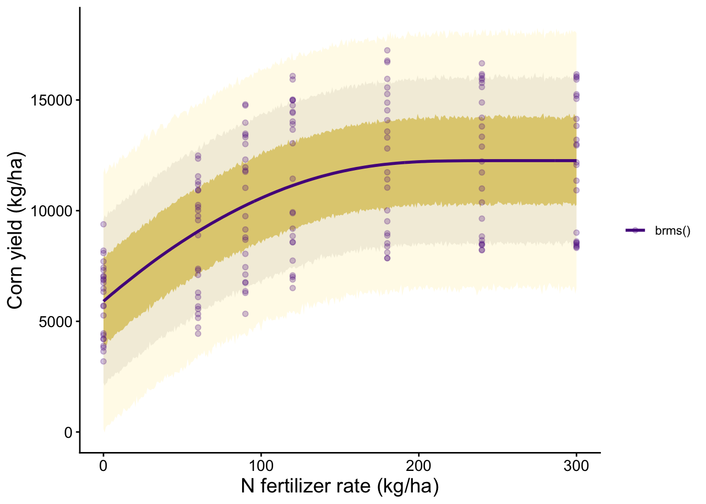
0.6.4.3 Posterior distribution of AONR
Show code
post_pars %>%
ggplot(aes(x = AONR)) +
geom_histogram(bins = 40, fill = "grey70", color = "black") +
theme_classic() +
labs(x = "Posterior AONR (kg N/ha)", y = "Frequency")+
# add ribbons for quantiles
geom_vline(xintercept = aonr_quantiles$q025,
color = "grey15", linetype = "dashed", size = 1.2)+
geom_vline(xintercept = aonr_quantiles$q975,
color = "grey15", linetype = "dashed", size = 1.2)+
geom_vline(xintercept = aonr_quantiles$q500,
color = "tomato", linetype = "solid", size = 1.2)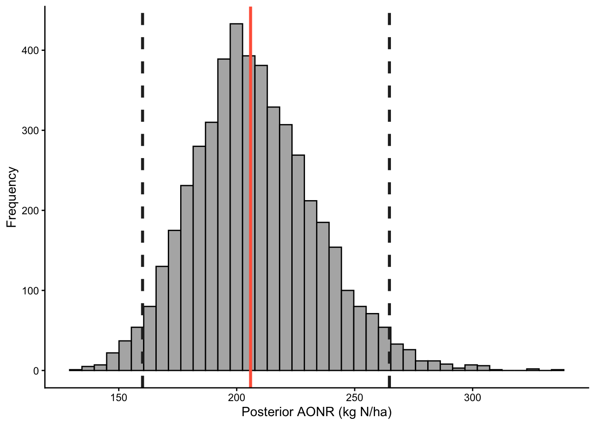
0.7 Group-specific quadratic-plateau model with site_year
Now let’s extend the global model. Here, we will:
- include a random block effect nested within
site_year - allow the quadratic-plateau parameters to vary by
site_year - sample posterior fitted values for each
site_year - plot fitted curves and predictive intervals by environment
0.7.1 Priors for site_year-specific parameters
Show code
priors_site_year <- c(
prior("normal(6000, 2500)", nlpar = "b0", lb = 0),
prior("normal(50, 25)", nlpar = "b1", lb = 0),
prior("normal(180, 60)", nlpar = "aonr", lb = 0),
prior("student_t(3, 0, 1000)", class = "sd", nlpar = "u", group = "site_year:block"),
prior("student_t(3, 0, 1000)", class = "sigma", lb = 0)
)
0.7.2 Model with site_year-specific parameters
Show code
bayes_model_sy <-
brms::brm(
prior = priors_site_year,
formula = bf(
yield_kgha ~
(1 - step(nrate_kgha - aonr)) *
(b0 + b1 * nrate_kgha - (b1 / (2 * aonr)) * nrate_kgha^2) +
step(nrate_kgha - aonr) *
(b0 + b1 * aonr - (b1 / (2 * aonr)) * aonr^2) +
u,
b0 ~ 0 + site_year,
b1 ~ 0 + site_year,
aonr ~ 0 + site_year,
u ~ 0 + (1 | site_year:block),
nl = TRUE
),
data = cornn_data,
family = gaussian(),
sample_prior = "yes",
control = list(adapt_delta = 0.995, max_treedepth = 15),
warmup = WU, iter = IT, thin = TH,
chains = CH, cores = CH,
seed = 1
)Running /Library/Frameworks/R.framework/Resources/bin/R CMD SHLIB foo.c
using C compiler: ‘Apple clang version 17.0.0 (clang-1700.6.3.2)’
using SDK: ‘MacOSX26.2.sdk’
clang -arch arm64 -std=gnu2x -I"/Library/Frameworks/R.framework/Resources/include" -DNDEBUG -I"/Library/Frameworks/R.framework/Versions/4.5-arm64/Resources/library/Rcpp/include/" -I"/Library/Frameworks/R.framework/Versions/4.5-arm64/Resources/library/RcppEigen/include/" -I"/Library/Frameworks/R.framework/Versions/4.5-arm64/Resources/library/RcppEigen/include/unsupported" -I"/Library/Frameworks/R.framework/Versions/4.5-arm64/Resources/library/BH/include" -I"/Library/Frameworks/R.framework/Versions/4.5-arm64/Resources/library/StanHeaders/include/src/" -I"/Library/Frameworks/R.framework/Versions/4.5-arm64/Resources/library/StanHeaders/include/" -I"/Library/Frameworks/R.framework/Versions/4.5-arm64/Resources/library/RcppParallel/include/" -I"/Library/Frameworks/R.framework/Versions/4.5-arm64/Resources/library/rstan/include" -DEIGEN_NO_DEBUG -DBOOST_DISABLE_ASSERTS -DBOOST_PENDING_INTEGER_LOG2_HPP -DSTAN_THREADS -DUSE_STANC3 -DSTRICT_R_HEADERS -DBOOST_PHOENIX_NO_VARIADIC_EXPRESSION -D_HAS_AUTO_PTR_ETC=0 -include '/Library/Frameworks/R.framework/Versions/4.5-arm64/Resources/library/StanHeaders/include/stan/math/prim/fun/Eigen.hpp' -D_REENTRANT -DRCPP_PARALLEL_USE_TBB=1 -I/opt/R/arm64/include -fPIC -falign-functions=64 -Wall -g -O2 -c foo.c -o foo.o
In file included from <built-in>:1:
In file included from /Library/Frameworks/R.framework/Versions/4.5-arm64/Resources/library/StanHeaders/include/stan/math/prim/fun/Eigen.hpp:22:
In file included from /Library/Frameworks/R.framework/Versions/4.5-arm64/Resources/library/RcppEigen/include/Eigen/Dense:1:
In file included from /Library/Frameworks/R.framework/Versions/4.5-arm64/Resources/library/RcppEigen/include/Eigen/Core:19:
/Library/Frameworks/R.framework/Versions/4.5-arm64/Resources/library/RcppEigen/include/Eigen/src/Core/util/Macros.h:679:10: fatal error: 'cmath' file not found
679 | #include <cmath>
| ^~~~~~~
1 error generated.
make: *** [foo.o] Error 1Show code
plot(bayes_model_sy)
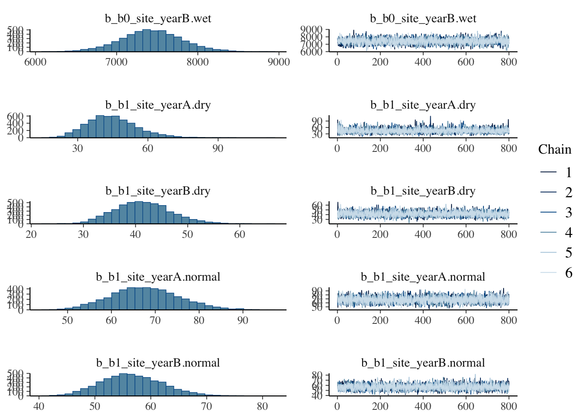
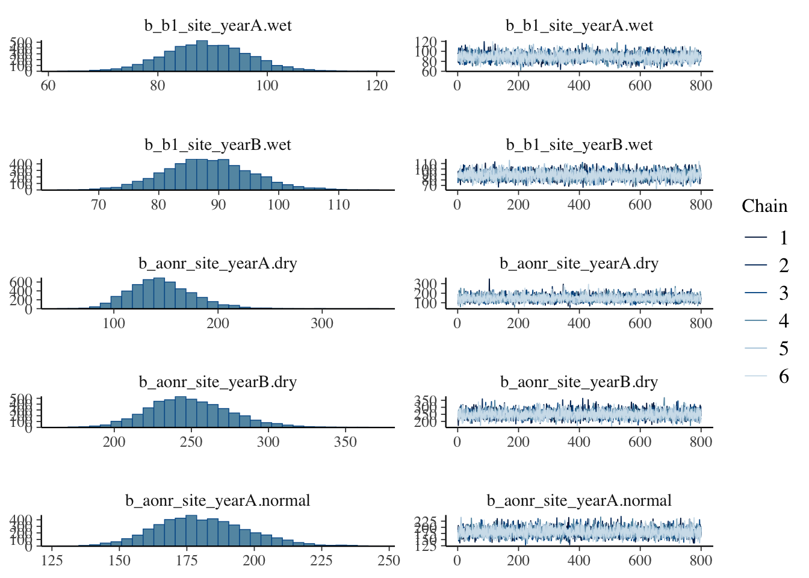
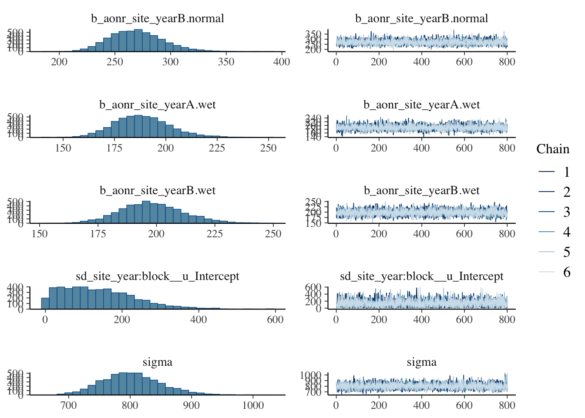
Show code
summary(bayes_model_sy) Family: gaussian
Links: mu = identity
Formula: yield_kgha ~ (1 - step(nrate_kgha - aonr)) * (b0 + b1 * nrate_kgha - (b1/(2 * aonr)) * nrate_kgha^2) + step(nrate_kgha - aonr) * (b0 + b1 * aonr - (b1/(2 * aonr)) * aonr^2) + u
b0 ~ 0 + site_year
b1 ~ 0 + site_year
aonr ~ 0 + site_year
u ~ 0 + (1 | site_year:block)
Data: cornn_data (Number of observations: 168)
Draws: 6 chains, each with iter = 6000; warmup = 2000; thin = 5;
total post-warmup draws = 4800
Multilevel Hyperparameters:
~site_year:block (Number of levels: 24)
Estimate Est.Error l-95% CI u-95% CI Rhat Bulk_ESS Tail_ESS
sd(u_Intercept) 138.60 95.40 5.98 361.51 1.00 3804 4263
Regression Coefficients:
Estimate Est.Error l-95% CI u-95% CI Rhat Bulk_ESS
b0_site_yearA.dry 5449.31 378.53 4714.11 6184.19 1.00 4812
b0_site_yearB.dry 3409.20 357.52 2708.16 4108.94 1.00 4961
b0_site_yearA.normal 7381.31 372.40 6649.55 8112.60 1.00 4901
b0_site_yearB.normal 4091.87 355.27 3381.36 4772.65 1.00 4493
b0_site_yearA.wet 7154.46 377.56 6400.38 7894.74 1.00 4699
b0_site_yearB.wet 7430.19 374.27 6695.69 8180.88 1.00 4686
b1_site_yearA.dry 44.83 10.78 26.55 68.22 1.00 4932
b1_site_yearB.dry 41.43 5.35 31.67 52.66 1.00 4859
b1_site_yearA.normal 67.71 7.75 53.30 83.48 1.00 4775
b1_site_yearB.normal 56.62 5.43 46.72 67.77 1.00 4577
b1_site_yearA.wet 88.95 7.63 74.25 104.17 1.00 4522
b1_site_yearB.wet 88.20 7.20 74.57 102.92 1.00 4608
aonr_site_yearA.dry 145.73 30.64 93.58 213.78 1.00 4998
aonr_site_yearB.dry 249.06 26.76 201.18 305.43 1.00 4864
aonr_site_yearA.normal 180.73 17.09 149.68 216.11 1.00 4680
aonr_site_yearB.normal 269.47 23.94 227.02 321.41 1.00 4729
aonr_site_yearA.wet 188.48 13.56 163.92 217.66 1.00 4714
aonr_site_yearB.wet 198.11 13.49 172.53 226.14 1.00 4810
Tail_ESS
b0_site_yearA.dry 4328
b0_site_yearB.dry 4863
b0_site_yearA.normal 4905
b0_site_yearB.normal 4320
b0_site_yearA.wet 4575
b0_site_yearB.wet 4699
b1_site_yearA.dry 4292
b1_site_yearB.dry 4656
b1_site_yearA.normal 4381
b1_site_yearB.normal 4580
b1_site_yearA.wet 4602
b1_site_yearB.wet 4780
aonr_site_yearA.dry 4714
aonr_site_yearB.dry 4736
aonr_site_yearA.normal 4234
aonr_site_yearB.normal 4503
aonr_site_yearA.wet 4268
aonr_site_yearB.wet 4581
Further Distributional Parameters:
Estimate Est.Error l-95% CI u-95% CI Rhat Bulk_ESS Tail_ESS
sigma 802.28 47.70 714.69 902.27 1.00 4831 4581
Draws were sampled using sampling(NUTS). For each parameter, Bulk_ESS
and Tail_ESS are effective sample size measures, and Rhat is the potential
scale reduction factor on split chains (at convergence, Rhat = 1).
l)
Chain 3:
Chain 1: Iteration: 2001 / 6000 [ 33%] (Sampling)
Chain 4: Iteration: 3200 / 6000 [ 53%] (Sampling)
Chain 5: Iteration: 3200 / 6000 [ 53%] (Sampling)
Chain 1: Iteration: 2600 / 6000 [ 43%] (Sampling)
Chain 4: Iteration: 3800 / 6000 [ 63%] (Sampling)
Chain 5: Iteration: 3800 / 6000 [ 63%] (Sampling)
Chain 4: Iteration: 4400 / 6000 [ 73%] (Sampling)
Chain 5: Iteration: 4400 / 6000 [ 73%] (Sampling)
Chain 1: Iteration: 3200 / 6000 [ 53%] (Sampling)
Chain 4: Iteration: 5000 / 6000 [ 83%] (Sampling)
Chain 5: Iteration: 5000 / 6000 [ 83%] (Sampling)
Chain 1: Iteration: 3800 / 6000 [ 63%] (Sampling)
Chain 4: Iteration: 5600 / 6000 [ 93%] (Sampling)
Chain 5: Iteration: 5600 / 6000 [ 93%] (Sampling)
Chain 4: Iteration: 6000 / 6000 [100%] (Sampling)
Chain 4:
Chain 4: Elapsed Time: 18.845 seconds (Warm-up)
Chain 4: 20.308 seconds (Sampling)
Chain 4: 39.153 seconds (Total)
Chain 4:
Chain 5: Iteration: 6000 / 6000 [100%] (Sampling)
Chain 5:
Chain 5: Elapsed Time: 18.63 seconds (Warm-up)
Chain 5: 21.848 seconds (Sampling)
Chain 5: 40.478 seconds (Total)
Chain 5:
Chain 1: Iteration: 4400 / 6000 [ 73%] (Sampling)
Chain 1: Iteration: 5000 / 6000 [ 83%] (Sampling)
Chain 1: Iteration: 5600 / 6000 [ 93%] (Sampling)
Chain 1: Iteration: 6000 / 6000 [100%] (Sampling)
Chain 1:
Chain 1: Elapsed Time: 23.967 seconds (Warm-up)
Chain 1: 27.285 seconds (Sampling)
Chain 1: 51.252 seconds (Total)
Chain 1:
0.7.3 Prepare summaries by site_year
Show code
newdata_sy <- cornn_data %>%
distinct(site_year) %>%
tidyr::crossing(
nrate_kgha = seq(min(cornn_data$nrate_kgha),
max(cornn_data$nrate_kgha), length.out = 600)
)
# Expected values (site_year-specific fixed effects only)
fit_sy_epred <- newdata_sy %>%
tidybayes::add_epred_draws(
bayes_model_sy,
newdata = .,
re_formula = NA,
ndraws = NULL
) %>%
ungroup()
fit_sy_epred_quantiles <- fit_sy_epred %>%
group_by(site_year, nrate_kgha) %>%
summarise(
q025 = quantile(.epred, 0.025),
q010 = quantile(.epred, 0.10),
q250 = quantile(.epred, 0.25),
q500 = quantile(.epred, 0.50),
q750 = quantile(.epred, 0.75),
q900 = quantile(.epred, 0.90),
q975 = quantile(.epred, 0.975),
.groups = "drop"
)
# Predicted values (including residual error)
fit_sy_pred <- newdata_sy %>%
tidybayes::add_predicted_draws(
bayes_model_sy,
newdata = .,
re_formula = NA,
ndraws = NULL
) %>%
ungroup()
fit_sy_quantiles <- fit_sy_pred %>%
group_by(site_year, nrate_kgha) %>%
summarise(
q025 = quantile(.prediction, 0.025),
q010 = quantile(.prediction, 0.10),
q250 = quantile(.prediction, 0.25),
q500 = quantile(.prediction, 0.50),
q750 = quantile(.prediction, 0.75),
q900 = quantile(.prediction, 0.90),
q975 = quantile(.prediction, 0.975),
.groups = "drop"
)
# Extract posterior samples for AONR by site_year
post_pars_sy <- bayes_model_sy %>%
posterior::as_draws_df() %>%
as_tibble() %>%
dplyr::select(starts_with("b_aonr_site_year")) %>%
pivot_longer(
cols = everything(),
names_to = "site_year",
values_to = "AONR"
) %>%
mutate(site_year = sub("^b_aonr_site_year", "", site_year))
# Distribution of AONR by site_year
AONR_quantiles_sy <- post_pars_sy %>%
group_by(site_year) %>%
summarise(
q025 = quantile(AONR, 0.025),
q010 = quantile(AONR, 0.10),
q250 = quantile(AONR, 0.25),
q500 = quantile(AONR, 0.50),
q750 = quantile(AONR, 0.75),
q900 = quantile(AONR, 0.90),
q975 = quantile(AONR, 0.975),
.groups = "drop"
)
0.7.4 Plot fitted curves and intervals by site_year
Show code
weather_cols <- c(dry = "#b2182b",
normal = "#1b9e77",
wet = "#2c7fb8" )
# Plots
ggplot() +
# Adding ribbons for predictive intervals
geom_ribbon(
data = fit_sy_quantiles,
aes(x = nrate_kgha, ymin = q025, ymax = q975),
fill = "grey70", alpha = 0.30
) +
geom_ribbon(
data = fit_sy_quantiles,
aes(x = nrate_kgha, ymin = q250, ymax = q750),
fill = "grey45", alpha = 0.45
) +
# Adding lines for expected values
geom_line(
data = fit_sy_epred_quantiles,
aes(x = nrate_kgha, y = q500),
linewidth = 1
) +
# Adding points for observed data
geom_point(
data = cornn_data,
aes(x = nrate_kgha, y = yield_kgha, color = weather, shape = site),
alpha = 0.70, size = 2
) +
scale_color_manual(values = weather_cols, name = "Weather") +
scale_shape_manual(values = c(16, 17, 15, 18, 8), name = "Site") +
facet_wrap(~ site_year) +
theme_classic() +
labs(
x = "N fertilizer rate (kg/ha)",
y = "Corn yield (kg/ha)",
title = "Quadratic-plateau response by site_year"
)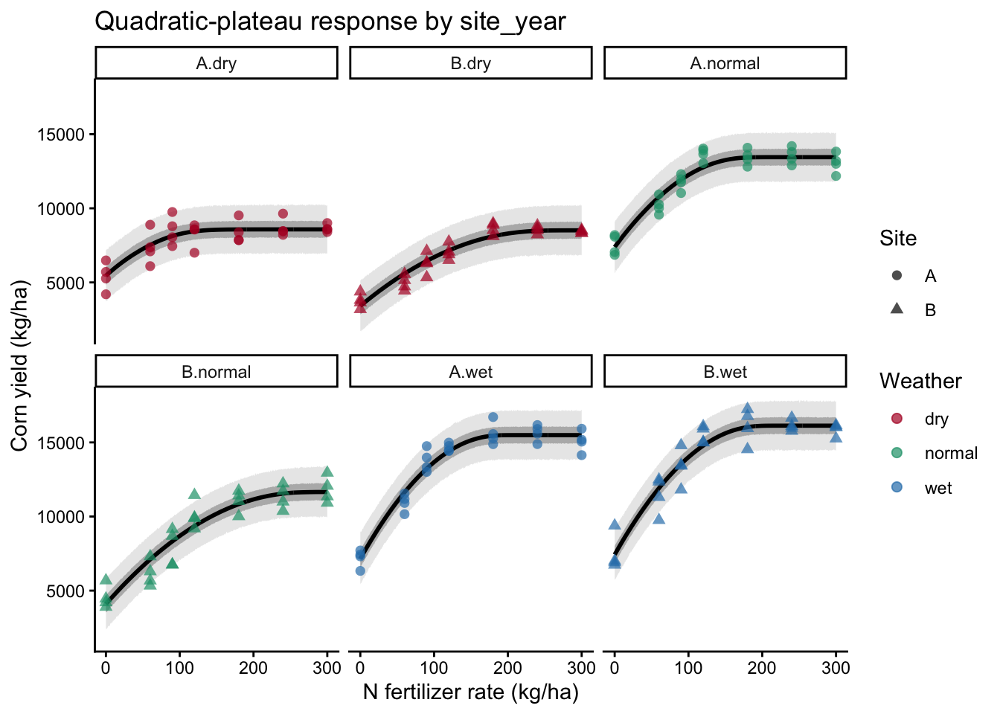
0.7.5 Plot AONR quantile bands by site_year
Show code
aonr_rects <- AONR_quantiles_sy %>%
left_join(
cornn_data %>%
group_by(site_year) %>%
summarise(
ymin = min(yield_kgha, na.rm = TRUE),
ymax = max(yield_kgha, na.rm = TRUE),
.groups = "drop"
),
by = "site_year"
)
# Plot with AONR quantile bands
ggplot() +
geom_rect(
data = aonr_rects,
aes(xmin = q025, xmax = q975, ymin = 0, ymax = 17500),
fill = "grey70", alpha = 0.18,
inherit.aes = FALSE
) +
geom_rect(
data = aonr_rects,
aes(xmin = q250, xmax = q750, ymin = 0, ymax = 17500),
fill = "grey45", alpha = 0.28,
inherit.aes = FALSE
) +
geom_line(
data = fit_sy_epred_quantiles,
aes(x = nrate_kgha, y = q500),
linewidth = 1
) +
geom_vline(
data = AONR_quantiles_sy,
aes(xintercept = q500),
linetype = 2,
linewidth = 0.8,
inherit.aes = FALSE
) +
geom_point(
data = cornn_data,
aes(x = nrate_kgha, y = yield_kgha, color = weather, shape = site),
alpha = 0.70, size = 2
) +
scale_color_manual(values = weather_cols, name = "Weather") +
scale_shape_manual(values = c(16, 17, 15, 18, 8), name = "Site") +
facet_wrap(~ site_year) +
theme_classic() +
labs(
x = "N fertilizer rate (kg/ha)",
y = "Corn yield (kg/ha)",
title = "Quadratic-plateau response by site_year with AONR bands"
)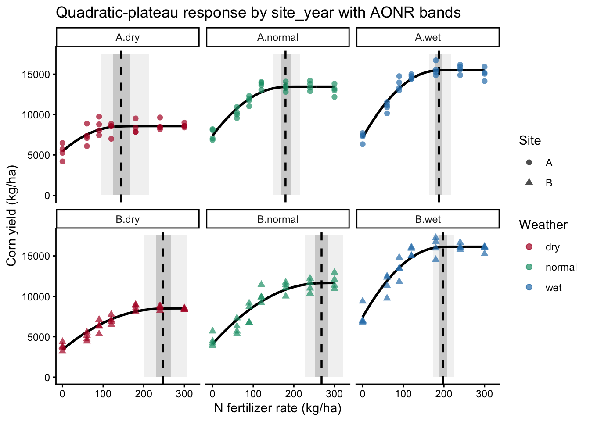
1 b0 posterior distribution by site_year
Show code
# Extract posterior samples for AONR by site_year
post_b0_sy <- bayes_model_sy %>%
posterior::as_draws_df() %>%
as_tibble() %>%
dplyr::select(starts_with("b_b0_site_year")) %>%
pivot_longer(
cols = everything(),
names_to = "site_year",
values_to = "b0"
) %>%
mutate(site_year = sub("^b_b0_site_year", "", site_year))
# Distribution of AONR by site_year
b0_quantiles_sy <- post_b0_sy %>%
group_by(site_year) %>%
summarise(
q025 = quantile(b0, 0.025),
q010 = quantile(b0, 0.10),
q250 = quantile(b0, 0.25),
q500 = quantile(b0, 0.50),
q750 = quantile(b0, 0.75),
q900 = quantile(b0, 0.90),
q975 = quantile(b0, 0.975),
.groups = "drop"
)
1.0.1 Plot b0 quantile bands by site_year
Show code
# Plot a pointrange for b0 quantiles
b0_quantiles_sy %>%
ggplot()+
geom_pointrange(aes(y = site_year, x = q500, xmin = q025, xmax = q975,
color = site_year),
size = 1.2)+
geom_pointrange(aes(y = site_year, x = q500, xmin = q250, xmax = q750,
color = site_year), size = 1.2)+
labs(x = "Site-Year", y = "Posterior b0 (kg/ha)", title = "Posterior distribution of b0 by site_year") +
theme_classic() +
theme(
axis.text.x = element_text(angle = 45, hjust = 1)
)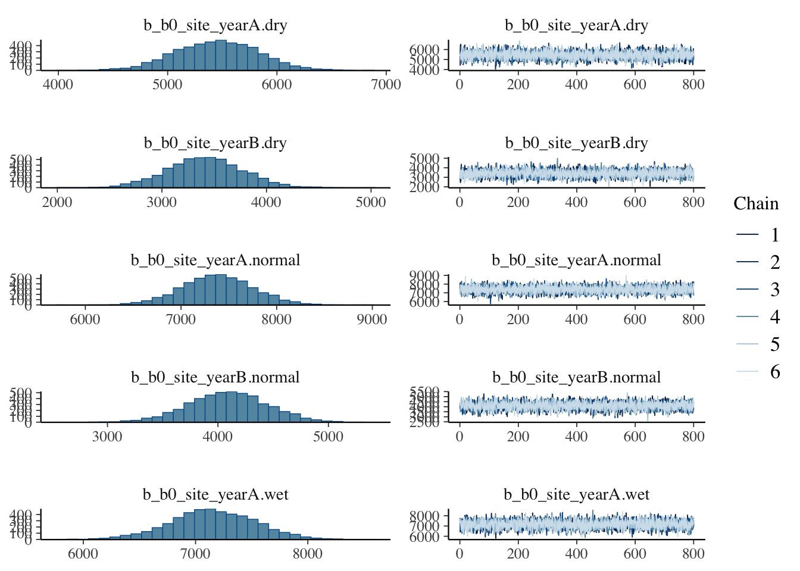
1.1 Final considerations
Bayesian analysis does not change the agronomic question. We still want to understand crop response, estimate meaningful parameters, and quantify uncertainty. What changes is the way uncertainty is represented and updated. Instead of focusing only on point estimates and p-values, Bayesian models allow us to work directly with probability distributions for parameters such as yield response, plateau, and AONR.
In this tutorial, we moved from a simple acceptance-rejection sampler to modern Bayesian regression with brms. That progression is important. The early examples help us understand the logic of posterior updating, while the brms models show how these ideas scale to realistic agronomic datasets.
A few practical lessons from this class:
- Priors should be chosen on the scale of the data and with agronomic meaning in mind.
- Posterior expected values (
epred) and posterior predictive values (prediction) answer different questions, so both can be useful. - Reparameterizing the model in terms of AONR can be more intuitive than working directly with curvature coefficients.
- Group-specific models can reveal that response curves and optimum N rates differ substantially across environments.
- Adding block effects helps respect the experimental design and can improve inference.
1.2 Suggested practice
You can extend these examples by:
- comparing weakly informative versus strongly informative priors
- checking model diagnostics such as trace plots, effective sample size, and R-hat
- comparing Bayesian quadratic and quadratic-plateau models
- evaluating whether AONR differs among environments
- incorporating additional hierarchical structure, such as years, sites, or weather classes
1.3 Closing message
Bayesian methods provide a flexible framework to connect prior knowledge, experimental data, and uncertainty in a way that is highly relevant for agricultural research. They are powerful models, but they still require the same discipline as any other statistical analysis: understanding the experiment, checking diagnostics, and asking whether the results make biological and agronomic sense.